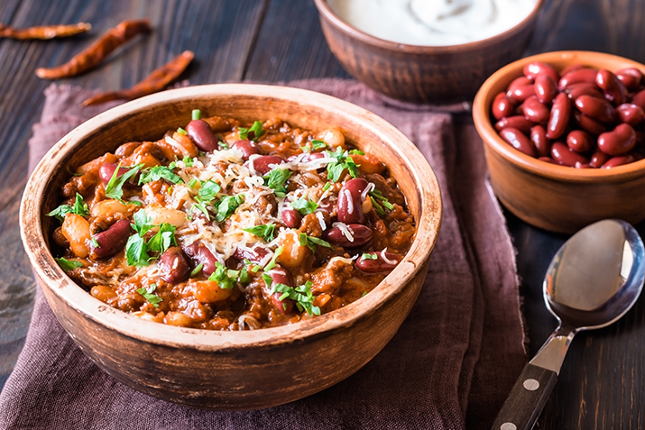

Bison Chili from Scratch

Elevate your chili by utilizing all grass fed & finished Bison!
Chili is a staple dish of American heritage and is simple enough that anyone can make an excellent bowl of chili.
Read over the reccomended ingredients and recipe below, but the fun part of making chili is being creative and making it your own.
Ingredients
- ½ pound dried red beans
- ¼ cup vegetable oil
- 1 large onion, diced
- 6 cloves garlic, minced
- 1 ½ pounds ground bison
- 8 medium tomatoes, finely chopped, with liquid
- 2 tablespoons red pepper flakes, or more to taste
- 4 teaspoons ground cumin
- 3 teaspoons dried oregano
- 1 teaspoon chili powder, or more to taste
- 1 teaspoon sea salt
- 1 teaspoon ground white pepper
- 1 teaspoon paprika
- 1 cup water
- 2 tablespoons masa flour, or more as needed
Directions
- Rinse beans. Combine with 3 quarts of cold water in a large pot. Soak 8 hours to overnight.
- Drain beans and return to the pot. Add 3 quarts fresh water and bring to a boil. Reduce heat to low and simmer uncovered until tender, 1 to 2 hours. Drain and set aside.
- Heat vegetable oil in a 4-quart stockpot over medium heat. Add onion and stir until softened, 5 to 10 minutes. Add garlic, stir for a minute, then add bison and cook until browned, 10 to 15 minutes. Stir tomatoes and liquid into stockpot.
- Combine red pepper flakes, cumin, oregano, chili powder, sea salt, white pepper, and paprika in a small container and stir to mix. Add to the stockpot and stir through. Add 1 cup water and stir gently while bringing water to a boil, about 5 minutes. Reduce heat to low and simmer, uncovered, for 1 hour.
- Taste bison mixture and adjust seasoning as desired. Add beans and mix through. Sprinkle 1 tablespoon masa flour on top and gently stir in to achieve a medium-thick consistency. Cover and simmer chili over low heat for 1 hour.
- Uncover chili, stir, and add another tablespoon masa flour. Continue simmering, uncovered, over low heat to desired consistency, 60 to 90 minutes. Cover the pot or add a teaspoon of masa flour to control consistency.
Cooks Notes
- Do not salt the bean water; it will make the beans cook more slowly.
- Use bison suet in place of vegetable oil, if you have it.
- Cut the kernels from leftover corn on the cob and add about 1 cup when you add the beans.
original recipe by Devon